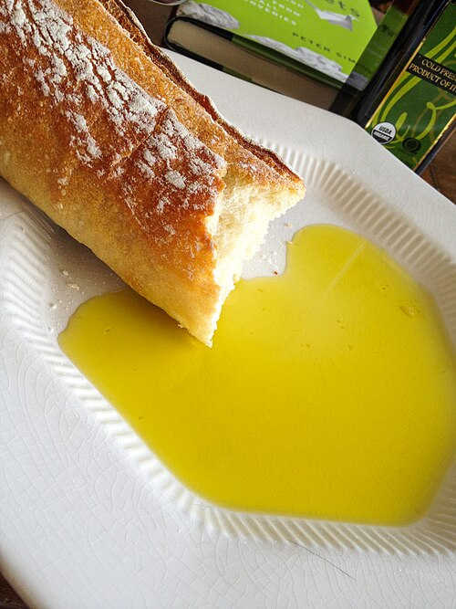

Olive Oil Bread

Description
A simple bread recipe, because the best breads are. This recipe is very versatile.
If you would like to use it for Pizza Dough, or Dinner Bun dough, simply add 1/4 cup more water.
If you find your dough to be too sticky, simple add a handful of flour to the dough at a time until the dough becomes workable and doesn't stick to your hand.
Ingredients
- 2 1/2 cups of bread flour
- 3/4 cup warm water (between 100 and 110 degrees F)
- 2 1/2 teaspoons dry active yeast
- 1 tablespoon granulated sugar
- 1 teaspoon salt
- 3 tablespoons of Olive Oil
- 1-2 cups of elbow grease
Recipe Steps:
- Run hot water until temp reaches between 100 and 110degrees F. Measure out 3/4 Cup
- Pour 2 1/2 teaspoons dry active yeast into water along with 1 tablespoon of granulated sugar. Mix until yeast and sugar are mostly dissolved. Let stand 5-10 mins until yeast "blooms".
- Measure out and pour 2 1/2 cups flour into a large mixing bowl. Add in 1 teaspoon of salt. Mix until salt is incorporated.
- Once yeast has "bloomed" pour entire contents into the flour. Measure and pour in 3 tablespoons olive oil.
- Grab 1 cup of elbow grease, apply liberally and evenly to both elbows.
- Grab your favorite spatula and begin to mix all of the Ingredients together, forming a rough dough. Don't worry to much if there is still some flour on the bottom of the bowl.
- Once rough dough ball is formed, lightly flour your work surface and turn dough out onto the work surface.
- Begin kneading the dough, one palm firmly on the dough and then firmly press the palm of your other hand and gently stretch the dough outwards. We want to stretch the dough, not tear it. Repeat process for 5 minutes or until dough is smooth.
- Once smooth dough ball is formed, place dough in a plastic container roughly twice it's size. Allow dough to rise in a warm part of your kitchen until dough ball has doubled in size or container is full. Roughly 45 mins to 1 hour.
- After dough has doubled in size, lightly flour your work surface and form bread into desired loaf shape.
For those curious about the different ways you can knead bread and ways to shape loafs. Please see this handy video made by the fine folks at Allrecipes.com over on Youtube
Home